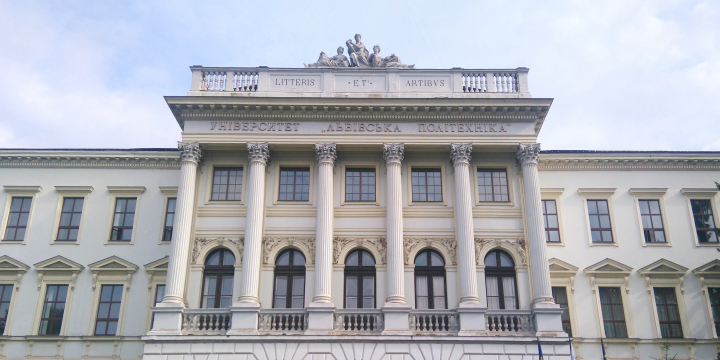

Звіт ректора про основні досягнення Львівської політехніки у 2025 році на Конференції трудового колективу Університету
Інститути – досягнення, плани, мотивація: тематичний номер журналу «Львівська політехніка»
Політехніка екскурсійна
Львівська політехніка у рейтингах закладів вищої освіти